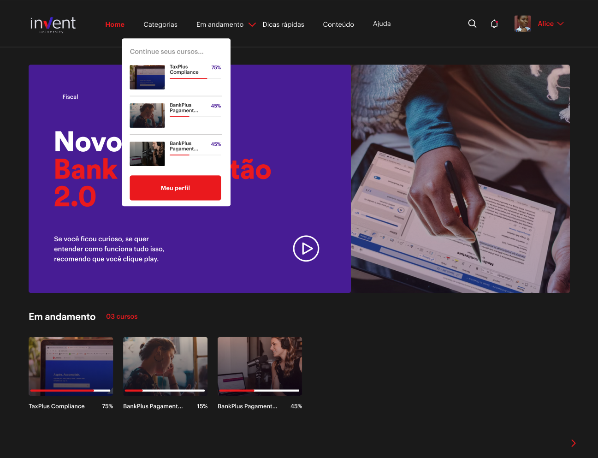
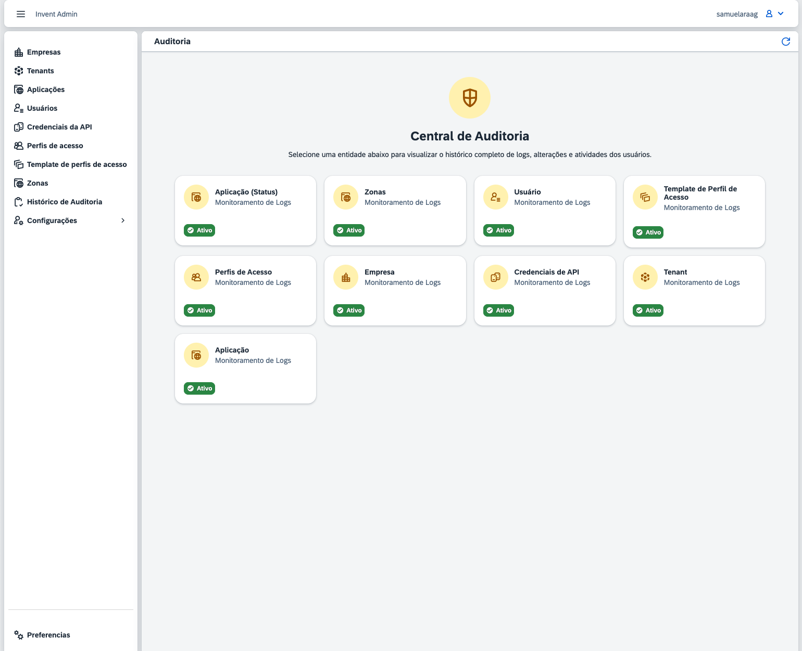
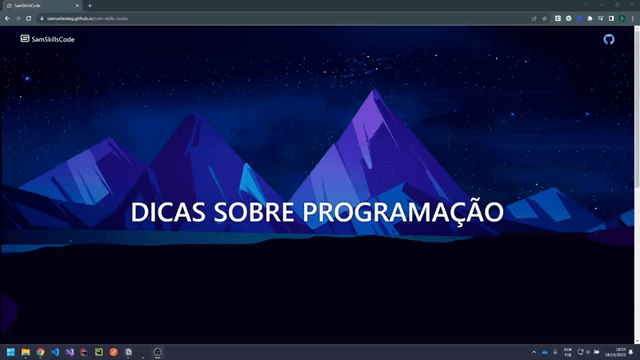

Samuel Araag
Senior Software Engineer | Especialista .NET
Engenheiro de Software Sênior com mais de 4 anos de experiência em desenvolvimento backend, microsserviços e sistemas de alta performance.
Projetos
Aplicações corporativas
Sobre mim
Engenheiro de Software Sênior com mais de 4 anos de experiência em desenvolvimento backend e microsserviços, com progressão de estagiário a especialista. Atuação em sistemas críticos transacionais de alto volume (NFe e CTe), com foco em performance, escalabilidade e confiabilidade.
Sólida experiência em C#, .NET Core, ASP.NET Core e arquiteturas orientadas a eventos (Event-Driven) com RabbitMQ, Apache Kafka e AWS (SQS, EC2, Lambda). Domínio de Clean Architecture, DDD e SOLID, bancos SQL e NoSQL e práticas DevOps (Docker, CI/CD, TDD).
Experiências Profissionais
Especialista em Desenvolvimento de SoftwareAtual
Lidero o design e a implementação de soluções backend de alta complexidade em .NET/C#, assegurando escalabilidade e performance de sistemas críticos transacionais.
- Desenvolvo integrações de alto volume para processamento de Notas Fiscais (NFe e CTe) utilizando AWS SQS, Redis e workers assíncronos.
- Estruturo pipelines de CI/CD no GitLab, automatizando build, testes e deploy e aumentando a confiabilidade das entregas.
- Implemento testes automatizados (unitários, de integração e E2E) com xUnit e TDD, elevando a cobertura de testes.
- Monitoro KPIs operacionais e implemento soluções de observabilidade para garantir a saúde e a eficiência dos sistemas.
Tech Lead / Software Engineer
Liderei tecnicamente equipe .NET, definindo padrões de Clean Architecture, SOLID e DDD para microsserviços escaláveis.
- Desenvolvi APIs RESTful de alta performance em .NET Core (C#) e front-end em Angular.
- Otimizei consultas no RavenDB com indexação avançada, reduzindo a latência de leitura em ~90%.
- Conduzi code reviews e mentoria técnica de desenvolvedores, elevando o padrão de qualidade do código da equipe.
Analista de Desenvolvimento de Software
Desenvolvi módulos em .NET Framework/Core e Angular com arquitetura modular, melhorando a manutenibilidade das aplicações.
- Otimizei índices e queries no RavenDB, acelerando o processamento de dados complexos.
- Implementei testes unitários e de integração com xUnit e TDD, reduzindo a incidência de bugs em produção.
- Participei da definição arquitetural de soluções e da análise de requisitos junto a stakeholders e Product Owners.
Técnico em Desenvolvimento de Software
Desenvolvi APIs REST em .NET Core (C#) aplicando Clean Code e princípios SOLID, garantindo código escalável e de qualidade.
- Modelei dados e otimizei queries no RavenDB, melhorando a performance de acesso às informações.
- Implementei e mantive pipelines de CI/CD (GitLab), automatizando o fluxo de build, testes e deploy entre ambientes.
- Conduzi code reviews estruturados e apoiei o onboarding de novos desenvolvedores, promovendo consistência arquitetural.
Projetos em Destaque

Plataforma de ensino
Plataforma educacional construída do zero, com gestão de cursos com videoaulas, geração de certificado, moderação de comentários utilizando IA

Sistema de auditoria
Aplicação central com registros nas mudanças em entidades principais com logs de auditoria e visualização de histórico dos itens

Sam Skills Code
Base de conhecimento técnica pessoal com dicas de programação, padrões C#, comandos Git e documentação de soluções para problemas do cotidiano.
Casos Técnicos & Decisões de Arquitetura
Uma síntese das principais decisões arquiteturais e desafios técnicos superados ao longo da minha trajetória.
Mensageria com RabbitMQ: Desacoplamento e responsabilidade
O projeto PR Manager necessitava de um sistema eficiente para notificações de status, além de estrutura para backups e orquestração de processos.
Modelei um fluxo focado em eventos de domínio utilizando exchanges fanout. A responsabilidade de escutar os eventos foi transferida para consumers independentes, removendo a dependência direta do producer sobre quem receberá a mensagem.
- Trade-offs: aumento da complexidade operacional e maior necessidade de observabilidade em processos assíncronos
- Impacto: desacoplamento real de responsabilidades, escalabilidade horizontal e resiliência via retry e controle de DLQ
Analytics de alta performance: Otimização e modelagem de leitura
Plataforma analítica com grande volume de dados fiscais e uso intenso de dashboards. Com o crescimento da base, consultas começaram a degradar severamente.
Tratei o problema como um erro de modelagem de leitura, e não como falta de otimização. Redesenhei o acesso aos dados utilizando Map Index do RavenDB, pré-processando agregações durante a indexação.
- Trade-offs: custo maior de indexação, consistência eventual
- Impacto: dashboards com resposta quase instantânea, base preparada para escalar
Controle de auditoria - Monitoramento de modificações dentro do sistema
Ambiente regulado com exigência de rastreabilidade clara de alterações.
Avaliei o uso de Revisions do RavenDB por meio de POC em escala real, mas optei por uma collection própria de auditoria, explicitamente modelada no domínio. Isso garantiu um filtro inteligente e agrupamentos simplificados.
- Trade-offs: mais storage e responsabilidade na aplicação
- Impacto: auditorias rápidas, compreensíveis e confiáveis
Plataforma de ensino - Cursos com vídeos e certificados
Plataforma educacional construída do zero, com necessidade de crescimento contínuo.
Implementei validações centralizadas via Action Filters, formulários complexos com FormGroup no Angular, integração direta com a API do Vimeo e migração controlada do Firebase para RavenDB.
- Trade-offs: maior complexidade arquitetural
- Impacto: plataforma preparada para escalar usuários e conteúdos
Moderação de Comentários - IA Assistida
Crescimento da plataforma educacional tornou a moderação manual inviável.
Modelei um fluxo de moderação assistida por IA, onde a decisão final permanece humana, reduzindo carga operacional sem comprometer a experiência do usuário.
- Trade-offs: falsos positivos e dependência de modelos externos
- Impacto: redução operacional com controle e segurança
Processamento em Massa - Estabilidade sob Pressão
Processamento de mais de 100 mil notas fiscais em ambiente com recursos limitados.
Optei por processamento em lote, controle explícito de memória e liberação progressiva de recursos, priorizando estabilidade ao invés de throughput máximo.
- Trade-offs: processamento mais lento
- Impacto: sistema resiliente e previsível em cenários extremos
Competências Técnicas
Vamos conversar
Parcerias, oportunidades e desafios. Entre em contato nas redes sociais